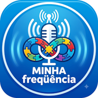

Minha Frequência WEB RÁDIO
Informação • acolhimento • inclusão
Sintonize
na sua frequência.
Uma rádio feita para compartilhar informação e ampliar a conversa sobre o Transtorno do Espectro Autista.
Aguardando informações
Aguardando dados da rádio
70%
Rádio desligada
A transmissão começa ao tocar no botão. Os dados da música aparecem aqui quando a rádio os disponibiliza.
Enviar mensagem à equipe